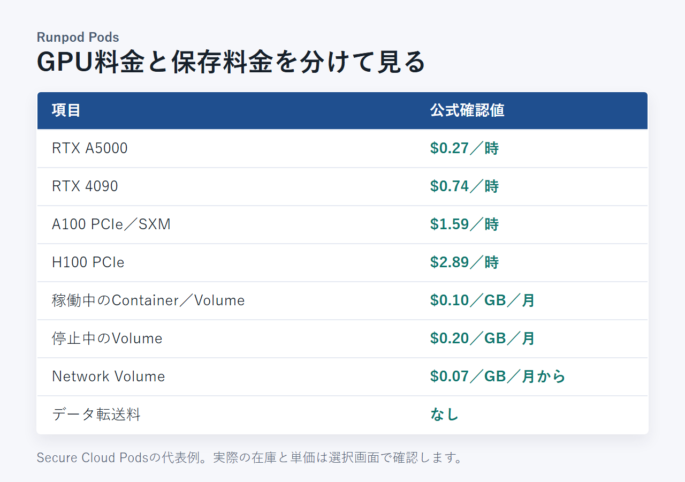
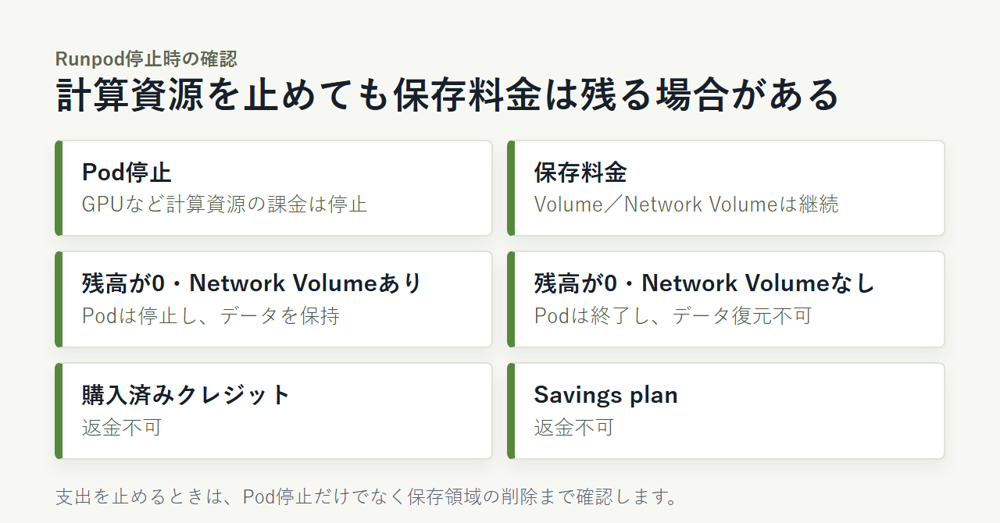

Runpodの料金はどう決まる？無料枠とGPU・ストレージの課金を解説
Runpodは、AI開発や画像生成に必要なGPUを、使った時間に応じて借りられるクラウドサービスです。料金は固定月額制ではありません。GPUの種類や稼働時間、保存容量によって請求額が変わります。
無料で試せるのか、停止後も料金がかかるのかは迷いやすいところです。この記事では、PodsとServerlessの違いから日本での支払いまで説明します。
Runpodの料金はPods・Serverless・Clustersの3系統
Runpodの公式料金はPods・Serverless・Clustersの3系統です。この記事で具体的な単価を扱うのは、Secure CloudのPodsとServerless Flexです。
- Pods：GPUとストレージに課金（本文対象）
- Serverless：処理時間に課金（本文対象）
- Clusters：大規模利用向け（本文対象外）
- 請求：USDのプリペイド方式
- 無料枠：公式文書では確認できず
3系統の区分と、Secure CloudのPods・Serverless Flexの最新単価を同じ料金ページで確認できます。
Runpodには、一般的なSaaSのような月額プラン一覧がありません。GPUを常時動かすのか、リクエスト時だけ処理するのかで、見るべき料金欄が変わります。
対話的にGPU環境を立ち上げて作業するならPodsが候補です。APIへのリクエストに応じて断続的に処理するなら、Serverlessを検討します。選ぶ基準は、個人・法人の区分よりも実行方式です。
この記事では、単価を公式確認できたSecure CloudのPodsとServerless Flexに絞ります。ClustersとCommunity Cloudの料金は対象外です。
PodsはGPUの稼働時間とストレージに課金される
Podsの総額は、GPUの単価だけでは決まりません。 稼働中のGPU料金に加え、ContainerやVolumeなどの保存料金を見込みます。
代表的なSecure CloudのGPU単価は次のとおりです。
- RTX A5000：$0.27／時
- RTX 4090：$0.74／時
- A100 PCIe／SXM：$1.59／時
- H100 PCIe：$2.89／時
ストレージはGPUとは別に計算されます。
- 稼働中のContainer／Volume：$0.10／GB／月
- 停止中のVolume：$0.20／GB／月
- Network Volume（1TB未満）：$0.07／GB／月
- Network Volume（1TB超）：$0.05／GB／月
- データ転送料：なし

GPUごとの在庫と時間単価を、現在の選択画面で見比べられます。
GPUの料金は秒単位で計算される
PodsのGPU料金は秒単位の従量課金です。たとえばRTX 4090を30分動かした場合、GPU部分の計算上の目安は$0.37。2時間なら$1.48です。
時間単価が低くても、処理に長くかかれば総額は増えます。GPUを比べるときは、1時間あたりの価格だけでなく、予定する作業が終わるまでの時間も考えます。
なお、上記はSecure Cloudの代表例です。Community Cloudの料金はこの記事では扱いません。
停止後もVolumeとNetwork Volumeの保存料金は残る
Podを停止すると、計算資源の課金は止まります。一方、VolumeやNetwork Volumeにデータを残すと、保存料金は継続します。
注意したいのは、稼働中のVolumeが$0.10／GB／月、停止中は$0.20／GB／月になる点です。GPUを止めた後も環境を残すなら、その期間を含めて予算を組みます。
学習済みモデルや生成物を保持するなら、Network Volumeも選択肢です。完全に不要になったデータは、保存先を確かめてから削除します。
Savings planはGPU利用料の前払いで、ストレージは対象外
Pod Savings planは、GPU利用料を3か月または6か月分前払いする仕組みです。ストレージ料金は対象に含まれません。
継続してGPUを使う予定があっても、前払い額だけで総費用を見積もるのは不十分です。必要な保存容量を出し、GPUとは別に加えてください。購入済みのSavings planは返金されません。
Serverlessは処理時間とGPUの種類で料金が変わる
Serverless Flexも秒単位の従量課金です。 常時起動するPodより、呼び出しが断続的なAPI処理の費用を考えるときに適しています。
主なGPU区分の単価は次のとおりです。
- 16GB：$0.58／時
- 24GB：$0.69／時
- RTX 4090：$1.10／時
- 48GB：$1.22／時
- A100：$2.72／時
- H200：$5.93／時
- B300：$9.98／時
同じRTX 4090でも、PodsのSecure Cloudは$0.74／時、Serverless Flexは$1.10／時です。ただし、単価だけでどちらが安いとは決まりません。
開発環境を立ち上げたまま作業するならPods、APIを呼んだ分だけ処理するならServerlessが候補です。利用時間と呼び出し方をそろえて比べます。
Runpodの無料プラン・無料トライアルは公式文書で確認できない
常設の無料プランと無料トライアルは、公式の料金・請求文書では確認できません。 セルフサービスで試す場合も、先にプリペイド残高を追加します。
- 常設無料プラン：確認できず
- 常設無料トライアル：確認できず
- 最初の入金：最小$10から案内
- 新規Pod：選択した構成の1時間分以上の残高が必要
「Runpodを無料で使える」という案内を見かけたら、常設の無料枠か、紹介・イベントによる一時的なクレジットかを分けて考えてください。この記事では条件を確認できないクレジット額や入手方法は扱いません。
まず使いたいGPUの1時間分と、必要なストレージ料金を見積もります。その合計が最初に入れるクレジットの目安です。
利用時間ごとの総額はGPU料金と保存料金を分けて計算する
日本円の目安を出すときは、GPUの時間単価だけを月額へ置き換えません。 利用時間と保存容量を決め、USDの合計を円へ換算します。
ここではGPU料金と任意の保存料金を分けて示します。Secure CloudのRTX 4090を使い、稼働中のContainer／Volumeを50GB、1か月保持すると仮定します。1ドル=157円換算（執筆時点の目安。為替で変動）です。
GPUを1時間使い、50GBを1か月保持する場合：
- GPU：$0.74×1時間＝$0.74
- 保存（保持する場合）：50GB×$0.10＝$5.00／月
- GPUと保存の合計：$5.74（約901円）
GPUを合計10時間使い、50GBを1か月保持する場合：
- GPU：$0.74×10時間＝$7.40
- 保存（保持する場合）：50GB×$0.10＝$5.00／月
- GPUと保存の合計：$12.40（約1,947円）
GPUを月40時間使い、50GBを1か月保持する場合：
- GPU：$0.74×40時間＝$29.60
- 保存（保持する場合）：50GB×$0.10＝$5.00／月
- GPUと保存の合計：$34.60（約5,432円）
保存料金は、データを保持する場合に加わります。したがって、$5.74はGPUを1時間使うときの必須額ではありません。
これは固定プランの価格ではありません。条件を置いた計算例です。停止中も50GBのVolumeを残すなら、保存部分は$0.20／GB／月で計算し直します。
日本からの支払い方法・請求書・消費税の扱い
日本からは、プリペイドクレジットへ入金して利用できます。 一般アカウントと$5,000を超える取引では、支払い方法や請求書対応が異なります。
- 対応カード：Visa、Mastercard、American ExpressなどのStripe対応カード
- 暗号資産：対応
- Business invoicing：$5,000超の取引で利用可能
- Business invoicingの決済：ACH、銀行送金、カード
- 通貨：USD
日本は利用規約の禁輸対象地域に含まれず、福島の日本リージョンAP-JP-1も提供されています。JCBへの対応は公式情報で確認できません。
一般アカウントでは、Billing画面から残高、最近の取引、利用履歴を見られます。ただし、PDF形式の請求書や領収書をダウンロードできるかは確認できません。法人で書類が必要なら、入金前に経理要件と照らし合わせます。
消費税やインボイスの扱いは、契約主体や取引条件で変わります。経費処理に必要な書類とあわせて、税理士に確認してください。
入金前に、対応カードとBilling画面の案内を確認できます。
課金を止めるにはPod停止後の保存領域まで確認する
Podを停止すると計算資源の課金は止まりますが、VolumeやNetwork Volumeの保存料金は続きます。 支出を止めるには、残すデータと削除するデータまで決めます。
- Pod停止：GPUなど計算資源の課金は停止
- 保存料金：VolumeとNetwork Volumeは継続
- 残高が0：Network Volume付きPodは停止し、データを保持
- 残高が0：Network VolumeなしPodは終了し、データを復元できない
- 購入済みクレジット：返金不可
- Savings plan：返金不可

作業を再開するなら、必要なデータを保存したままPodを止めます。もう使わないなら、手元への退避を済ませたうえで保存領域も削除する流れです。
利用前に、停止時の課金と返金条件を公式文書で確認できます。
ほかのGPUクラウドと料金を比べるときのチェック項目
時間単価だけでは、GPUクラウドの安さを判断できません。 同じGPUと利用時間を置き、保存や入金まで条件をそろえて比べます。
- GPUの時間単価と必要な処理時間
- 秒単位か、より大きな時間単位か
- 停止中に残るストレージ料金
- 常設無料枠と最低入金額
- データ転送料
- 国内リージョンの有無
RunpodはPodsとServerlessが秒単位で、データ転送料はありません。一方、常設無料枠は公式文書で確認できず、最小$10からの入金が案内されています。
Vast.aiやLambdaなどの候補と比べる場合も、表示されたGPU単価だけを並べないことが大切です。在庫があるか、処理後にデータをどこへ残すかまで同じ条件にします。
GPUクラウドの候補を広く比べるときも、時間単価だけでなく在庫や保存先まで条件をそろえます。
まとめ：Runpodは利用時間と保存料金を見積もってから始める
Runpodは固定月額ではなく、GPUとストレージの従量課金です。 常設無料枠は公式文書で確認できません。まず使うGPUを決め、必要な稼働時間と保存容量を見積もります。そのうえで必要額を入金します。
- GPU環境を動かすならPods、API処理ならServerlessを検討
- 常設の無料プランと無料トライアルは確認できず
- Pod停止後も保存料金が残る場合あり
- 日本からはUSDのプリペイド方式で利用可能
利用予定のGPUを選び、現在の単価と在庫を確かめてから入金できます。
Runpodを使い始めるときは、登録後の操作手順もあわせて確認しておくと迷いません。
日本語で使える範囲を重視するなら、画面表示やサポートの対応状況も判断材料になります。
他のGPUクラウドも候補に入れるなら、料金以外の条件までそろえて比べることが大切です。